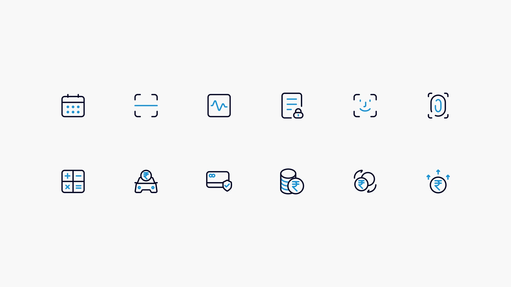
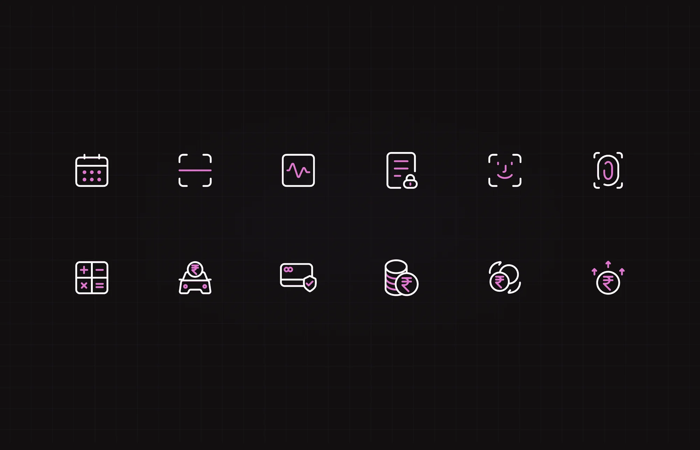

Visual craft
Illustration & icons
Illustrations, icon sets, stickers, and other visual experiments.
01Banking and essential iconsDrawn in Figma, animated in After Effects
A set of banking and everyday icons I drew from a blank grid in Figma, all with the same stroke and corners so they read as one family.

